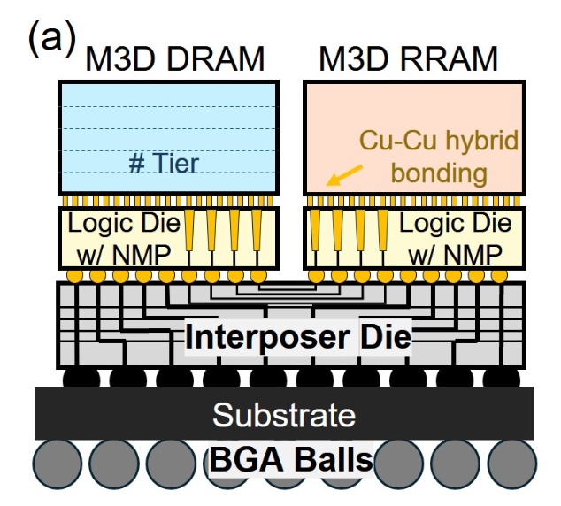
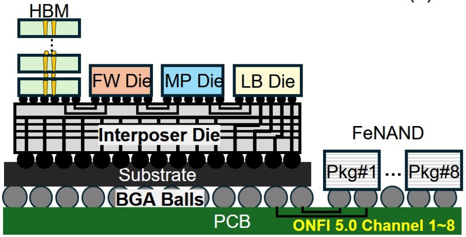
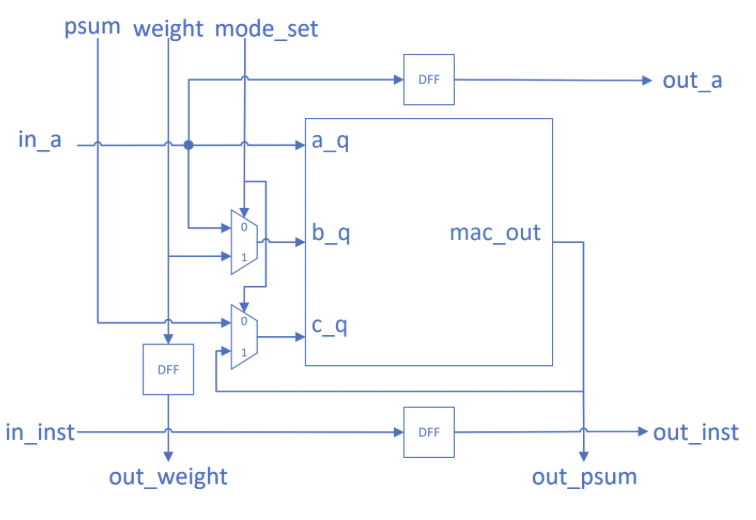
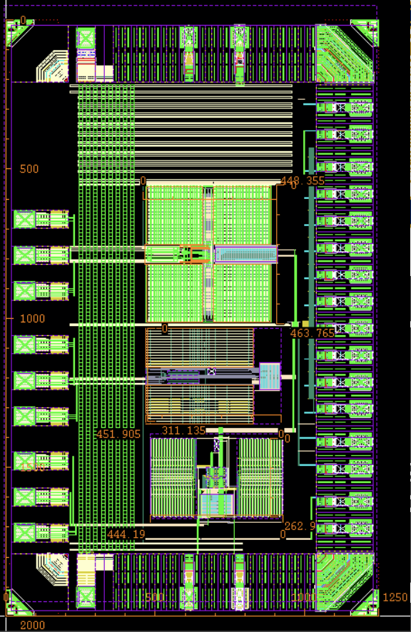

|
Runyang Tian I’m a second-year M.S. student in Electrical Engineering at University of California San Diego. My research interests include AI accelerator, PIM/NMP, and digital VLSI circuit. I am very fortunate to be advised by Prof. Tajana Šimunić Rosing of the System Energy Efficiency Lab (SeeLab). Before that, I received my Bachelor degree at Xi'an Jiaotong University. |

|
Research
|  |
CHIME: Chiplet-based Heterogeneous Near-Memory Acceleration for Edge Multimodal LLM Inference
Yanru Chen*, Runyang Tian*, Yue Pan, Zheyu Li, Weihong Xu, Tajana Rosing DATE, 2026 We propose CHIME, a chiplet-based heterogeneous near-memory accelerator that integrates monolithic 3D DRAM and RRAM. DRAM supplies low-latency bandwidth for attention, while RRAM offers dense, non-volatile storage for weights and FFN. My contribution includes proposing the mapping and scheduling methods and developing the simulator for performance evaluation. |
|  |
RAPID-Graph: Recursive All-Pairs Shortest Paths Using Processing-in-Memory for Dynamic Programming on Graphs
Yanru Chen, Zheyu Li, Keming Fan, Runyang Tian, John Hsu, Minxuan Zhou, Tajana Rosing DATE, 2026 We propose RAPID-Graph, a PIM system with algorithm, architecture optimizations. A recursion-aware partitioner enables in-place Floyd-Warshall and Min-Plus execution within digital PIM arrays. My contibution includes designing and synthesizing the RTL using Synopsys Design Compiler with a 40nm CMOS PDK at 500MHz, including custom permutation unit, min-comparator tree, and controller. |
Project
|  |
Reconfigurable 2D Systolic-Array NPU Design
Runyang Tian, Zichen Huang, Zhuohao Xu, Yiming Li, Mingu Kang Designed and verified a dual-core NPU, including MAC core, FIFO, SRAM, and SFU modules supporting convolution, matrix multiplication, normalization, and ReLU operators. Implemented cross-clock FIFOs, control for weight/output-stationary modes, and optimized PPA through pipelining, multi-cycle paths, and clock gating. Completed synthesis and PnR in TSMC 65nm CMOS technology. |
|  |
9-bit SAR ADC Design and Tape-out
Runyang Tian, Zichen Huang, Drew Hall Designed the schematic and layout applying dummy devices, common centroid pattern, and power shielding. Developed the SAR controller in Verilog, and completed synthesis and PnR. Designed pad ring with dummy fill and decoupling capacitors to meet density requirements. |
|
Feel free to steal this website's source code. |